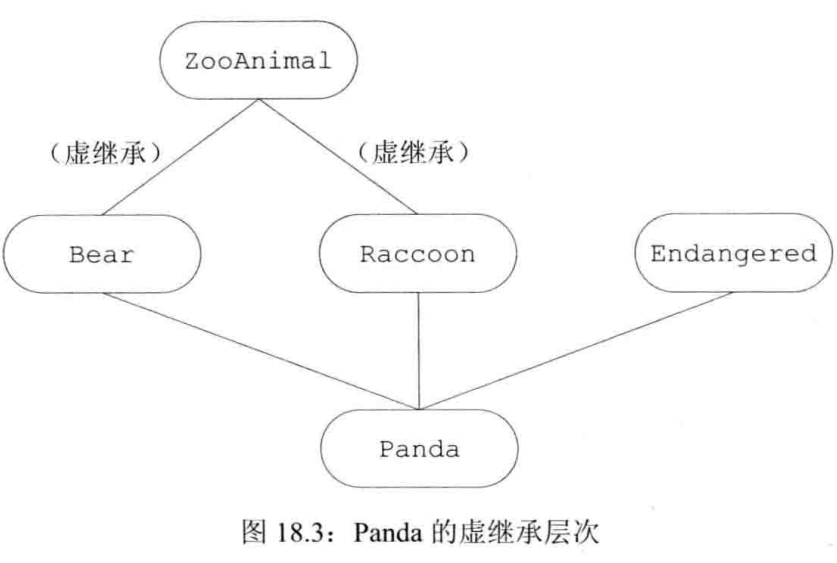

第18章 用于大型程序的工具
与仅需几个程序员就能开发完成的系统相比，大规模编程对程序设计语言的要求更高。大规模应用程序的特殊要求包括：
-
在独立开发的子系统之间协同处理错误的能力。
-
使用各种库（可能包含独立开发的库）进行协同开发的能力。
-
对比较复杂的应用概念建模的能力。
这三种C++语言特性正好能满足上述要求：异常处理、命名空间和多重继承。
异常处理
异常处理（exception handling）机制允许程序中独立开发的部分能够在运行时就出现的问题进行通信并做出相应的处理。异常使得我们能够将问题的检测与解决过程分离开来。程序的一部分负责检测问题的出现，然后解决该问题的任务传递给程序的另一部分。检测环节无须知道问题处理模块的所有细节，反之亦然。
抛出异常
在C++语言中，我们通过抛出（throwing）一条表达式来引发（raised）一个异常。被选中的处理代码是在调用链中与抛出对象类型匹配的最近的处理代码。
当执行一个throw时，后面的语句将不再被执行。程序的控制权从throw转移到与之匹配的catch模块。该catch可能是同一个函数中的局部catch，也可能位于直接或间接调用了发生异常的函数的另一个函数中。控制权的转移有两个重要的含义：
-
沿着调用链的函数可能会提早退出。
-
一旦程序开始执行异常处理代码，则沿着调用链创建的对象将被销毁。
!!!note 1. 一个异常如果没有被捕获，则它将终止当前的程序。 2. 析构函数不应该抛出异常。这是因为异常抛出时将调用对象的析构函数, 如果析构函数又抛出异常, C++就要多处理这个异常, 它还没有这个能力.
异常对象
异常对象（exception object）是一种特殊的对象，编译器使用异常抛出表达式来对异常对象进行拷贝初始化。如果表达式是类类型，则它必须含有一个可访问的析构函数和一个可访问的拷贝或移动构造函数。如果该表达式是数组类型或函数类型，则表达式将被转换成与之对应的指针类型。
当我们抛出一条表达式时，该表达式的静态编译时类型决定了异常对象的类型。如果一条throw表达式解引用一个基类指针，而该指针实际指向的是派生类对象，则抛出的对象将被切掉一部分，只有基类部分被抛出。
捕获异常
catch子句（catch clause）中的异常声明（exception declaration）看起来像是只包含一个形参的函数形参列表。
声明的类型决定了处理代码所能捕获的异常类型。这个类型必须是完全类型，它可以是左值引用，但不能是右值引用。
当进入一个catch语句后，通过异常对象初始化异常声明中的参数。如果catch的参数类型是非引用类型，则该参数是异常对象的一个副本；如果是引用类型，则他是异常对象的一个别名。
要注意的一点是：异常声明的静态类型将决定catch语句所能执行的操作。如果catch的参数是基类类型，则catch无法使用派生类特有的任何成员。
查找匹配的处理代码
在搜寻catch语句的过程中，我们最终找到的catch未必是异常的最佳匹配。相反，挑选出来的应该是第一个与异常匹配的catch语句。
!!!note 如果在多个catch语句的类型之间存在着继承关系，则我们应该把继承链最底端的类（most derived type）放在前面，而将继承链最顶端的类（least derived type）放在后面。
重新抛出
有时，一个单独的catch语句不能完整地处理某个异常。在执行了某些校正操作之后，当前的catch可能会决定由调用链更上一层的函数接着处理异常。一条catch语句通过重新抛出（rethrowing）的操作将异常传递给另外一个catch语句：
throw;
空的throw语句只能出现在catch语句或catch语句直接或间接调用的函数之内。如果在处理代码之外的区域遇到了空throw语句，编译器将调用terminate。
一个重新抛出语句并不指定新的表达式，而是将当前的异常对象沿着调用链向上传递。
catch (my_error &eObj) {
eObj.status = errCodes::serverErr; // 修改了异常对象
throw; // 异常对象的status成员是severErr
}
catch (other_error eObj) {
eObj.status = errCodes::badErr; // 只修改了异常对象的局部副本
throw; // 异常对象的status成员没有改变
}
捕获所有异常的处理代码
为了一次性捕获所有异常，我们使用省略号作为异常声明，这样的处理代码称为捕获所有异常（catch-all）的处理代码，形如catch(...)。它可以与任意类型的异常匹配。
catch(...)通常与重新抛出语句一起使用，其中catch执行当前局部能完成的工作，随后重新抛出异常：
void manip() {
try {
// 这里的操作将引发并抛出一个异常
}
catch (...) {
// 处理异常的某些特殊操作
throw;
}
}
!!!note 如果catch(...)与其他几个catch语句一起出现，则catch(...)必须在最后的位置。出现在捕获所有异常语句后面的catch语句将永远不会被匹配。
noexception异常说明
对于用户及编译器来说，预先知道某个函数不会抛出异常大有裨益。编译器确认函数不会抛出异常，它就能执行某些特殊的优化操作。
在C++11新标准中，我们可以通过提供noexcept说明（noexcept specification）指定某个函数不会抛出异常，其形式是关键字noexcept紧跟在函数的参数列表后面：
void recoup(int) noexcept; // 不会抛出异常
void alloc(int); // 可能抛出异常
对于一个函数来说，noexcept说明要么出现在该函数的所有声明语句和定义语句中，要么一次也不出现。
违反异常说明
编译器并不会在编译时检查noexcept说明。如果noexcept函数抛出了异常，程序就会调用terminate以确保遵守不在运行时抛出异常的承诺。
更多关于noexcept的讨论见p691。
命名空间
多个库将名字放置在全局命名空间中将引发命名空间污染（namespace pollution）。
命名空间（namespace）为防止名字冲突提供了更加可控的机制。命名空间分割了全局命名空间，其中每个命名空间是一个作用域。
命名空间的定义
一个命名空间的定义包含两部分：首先是关键字namespace，随后是命名空间的名字。
namespace cplusplus_primer {
class Sales_data {};
void Foo() {}
}
命名空间既可以定义在全局作用域内，也可以定义在其他命名空间中，但是不能定义在函数或类的内部。
全局作用域是隐式的，所以它没有名字。这样的形式::member_name表示全局命名空间中的一个成员。
命名空间可以是不连续的
编写如下命名空间定义：
namespace nsp {
// 相关声明
}
可能是定义了一个名为nsp的新命名空间，也可能是为已经存在的命名空间添加一些新成员。
命名空间的组织方式类似于我们管理自定义类及函数的方式：
-
命名空间的一部分成员的作用是定义类，以及声明作为类接口的函数及对象，则这些成员应该置于头文件中。
-
命名空间成员的定义部分则置于另外的源文件中。
在程序中某些实体只能定义一次：如非内联函数、静态数据成员、变量等，命名空间中定义的名字也需要满足这一要求，我们可以通过上面的方式组织命名空间并达到目的。
更多命名空间的定义方式见p698。
使用命名空间的成员
像namespace_name::member_name这样使用命名空间的成员显然非常烦琐，如果命名空间名字很长时尤其如此。
命名空间别名
命名空间别名（namespace alias）使得我们可以为命名空间的名字设定一个短得多的同义词。例如：
namespace cplusplus_primer {};
我们可以为其设定一个短得多的同义词：
namespace primer = cplusplus_primer;
namespace Qlib = cplusplus_primer::QueryLib;
!!!note 一个命名空间可以有好几个同义词或别名，所有别名都与命名空间原来的名字等价。
using声明：扼要概述
一条using声明（using declaration）语句一次只引入命名空间的一个成员。它使得我们可以清楚地知道程序中所用的到底是哪个名字。它的有效范围从using声明的地方开始，一直到using声明所在的作用域结束为止。在此过程中，外层作用域的同名实体将被隐藏。
using指示
using指示（using directive）和using声明类似的地方是，我们可以使用命名空间名字的简写形式；和using声明不同的是，我们无法控制哪些名字是可见的，因为所有名字都是可见的。
using指示以关键字using开始，后面是关键字namespace以及命名空间的名字。它使得某个命名空间中所有的名字都可见，简写的名字从using指示开始，一直到using指示所在的作用域结束都能使用。
更多关于using指示的讨论见p703。
类、命名空间与作用域
对命名空间内部名字的查找遵循常规的查找规则：即由内向外依次查找每个外层作用域。外层作用域也可能是一个或多个嵌套的命名空间，直到最外层的全局命名空间查找过程终止。
实参相关的查找与类类型形参
当我们给函数传递一个类类型的对象时，除了在常规的作用域查找外还会查找实参类所属的命名空间。这一例外对于传递类的引用或指针的调用同样有效。
还有更多的讨论见书本。
重载与命名空间
using声明或using指示能将某些函数添加到候选函数集。
与实参相关的查找与重载
对于接受类类型实参的函数来说，其名字查找将在实参类所属的命名空间中进行。这条规则对于如何确定候选函数集也有影响。我们将在每个实参类（以及实参类的基类）所属的命名空间中搜寻候选函数。在这些命名空间中所有与被调用函数同名的函数都将被添加到候选集当中。
namespace NS {
class Quote {};
void display(const Quote&) {}
}
class Bulk_item : public NS::Quote {};
int main()
{
Bulk_item book1;
display(book1);
return 0;
}
我们传递给display的实参属于类类型Bulk_item，因此该调用语句的候选函数不仅应该在调用语句所在的作用域中查找，而且也应该在Bulk_item及其基类Quote所属的命名空间中查找。命名空间NS中声明的函数display(const Quote&)也将被添加到候选函数集当中。
using声明与using指示都会把命名空间的函数注入当前的作用域，并在调用时加入到候选函数中。这有可能造成二义性调用等重载问题，具体见书本上的讨论。
多重继承与虚继承
多重继承是指从多个直接基类中产生派生类的能力。多重继承的派生类继承了所以父类的属性。书本以动物体系为例进行讲解。
多重继承
在派生类的派生列表中可以包含多个基类：
class Bear : public ZooAnimal {};
class Panda : public Bear, public Endangered {};
每个基类包含一个可选的访问说明符。对于派生类能够继承的基类个数，C++没有进行特殊规定；但是在某个给定的派生列表中，同一个基类只能出现一次。
在多重继承关系中，派生类的对象包含有每个基类的子对象。在Panda对象中含有一个Bear部分（其中又含有一个ZooAnimal部分）、一个Endangered部分以及在Panda中声明的非静态数据成员。
派生类构造函数初始化所有基类
构造一个派生类对象将同时构造并初始化它的所有基类子对象。与从一个基类进行的派生一样，多重继承的派生类的构造函数初始值也只能初始化它的直接基类：
// 显式地初始化所有基类
Panda::Panda(std::string name, bool onExhibit) :
Bear(name, onExhibit, "Panda"),
Endangered(Endangered::critical) {}
// 隐式地使用Bear的默认构造函数初始化Bear子对象
Panda::Panda() :
Endangered(Endangered::critical) {}
基类的构造顺序与派生列表中基类的出现顺序保持一致，而与派生类构造函数初始值列表中基类的顺序无关。一个Panda对象的初始化顺序如下：
-
ZooAnimal是整个继承体系的最终基类，最先初始化。
-
接下来初始化Panda的第一个直接基类Bear。
-
然后初始化Panda的第二个直接基类Endangered。
-
最后初始化Panda。
继承的构造函数与多重继承
在C++11新标准中，允许派生类从它的一个或几个基类中继承构造函数。但是如果从多个基类中继承了相同的构造函数（即形参列表完全相同），则程序将产生错误：
struct Base1 {
Base1(const std::string&);
};
struct Base2 {
Base2(const std::string&);
};
// 错误，试图从两个基类中继承D1::D1(const string&)
struct D1 : public Base1, public Base2 {
using Base1::Base1; // 从Base1继承构造函数
using Base2::Base2; // 从Base2继承构造函数
// 解决办法：必须自定义一个接受string的构造函数
D1(const std::string &s) : Base1(s), Base2(s) {}
};
析构函数与多重继承
和往常一样，派生类的析构函数只负责清除派生类本身分配的资源，派生类的成员及基类都是自动销毁的。合成的析构函数体为空。
析构函数的调用顺序正好与构造函数相反，在我们的例子中，析构函数的调用顺序是：~Panda, ~Endangered, ~Bear, ~ZooAnimal。
多重继承的派生类的拷贝与移动操作
与只有一个基类的继承一样，多重继承的派生类如果定义了自己的拷贝/赋值构造函数和赋值运算符，则必须在完整的对象上执行拷贝、移动或赋值操作。只有当派生类使用的是合成版本的拷贝、移动或赋值成员时，才会自动对基类部分执行这些操作。在合成的拷贝控制成员中，每个基类分别使用自己的对应成员隐式地完成构造、赋值或销毁等工作。
类型转换与多个基类
在只有一个基类的情况下，派生类的指针或引用能自动转换成一个可访问基类的指针或引用。多个基类的情况与之类似。我们可以令某个可访问的基类的指针或引用直接指向一个派生类对象。
// 接受Panda的基类引用的一系列操作
void print(const Bear&);
void highlight(const Endangered&);
ostream& operator<<(ostream&, const ZooAnimal&);
Panda ying_yang("ying_yang");
print(ying_yang); // 绑定到Bear&
highlight(ying_yang); // 绑定到Endangered&
cout << ying_yang << endl; // 绑定到ZooAnimal&
编译器不会在派生类向基类的几种转换中进行比较和选择，因为在它看来转换到任意一种基类都一样好。如果存在如下所示的print重载形式：
void print(const Bear&);
void print(const Endangered&);
那么通过Panda对象这样调用print函数将产生二义性编译错误：
print(ying_yang);
与只有一个基类的继承一样，对象、指针和引用的静态类型决定了我们能够使用哪些成员。
多重继承下的类作用域
在只有一个基类的情况下，派生类的作用域嵌套在直接基类和间接基类的作用域中。查找过程沿着继承体系自底向上进行，直到找到所需的名字。派生类的名字将隐藏基类的同名成员。
在多重继承的情况下，相同的查找过程在所有直接基类中同时进行。如果名字在多个基类中都被找到，则对该名字的使用将具有二义性。
对于一个派生类来说，从它的几个基类中分别继承名字相同的成员是完全合法的，只不过在使用这个名字时必须明确指出它的版本。
!!!warning 当一个类拥有多个基类时，有可能出现派生类从两个或更多基类中继承了同名成员的情况。此时，不加前缀限定符直接使用该名字将引发二义性。
虚继承
尽管在派生列表中同一个基类只能出现一次，但实际上派生类可以多次继承同一个类。派生类可以通过它的两个直接基类分别继承同一个间接基类，也可以直接继承某个基类，然后通过另一个基类再一次间接继承该类。
在默认情况下，派生类中含有继承链上每个类对应的子部分。如果某个类在派生过程中出现了多次，则派生类中将包含该类的多个子对象。
在C++语言中我们通过虚继承（virtual inheritance）的机制解决上述问题。虚继承的目的是令某个类做出声明，承诺愿意共享它的基类。共享的基类子对象被称为虚基类（virtual base class）。在这种机制下，不论虚基类在继承体系中出现了多少次，在派生类中都只包含唯一一个共享的虚基类子对象。
例如：

!!!note 虚派生只影响从指定了虚基类的派生类中进一步派生出的类，它不会影响派生类本身。
使用虚基类
我们指定虚基类的方式是在派生列表中添加关键字virtual:
// 关键字public和virtual的顺序随意
class Raccoon : public virtaul ZooAnimal {};
class Bear : public virtaul ZooAnimal {};
上述代码将ZooAnimal定义为Raccoon和Bear的虚基类。
virtual说明符表明了一种愿望，即在后续的派生类当中共享虚基类的同一份实例。至于什么样的类能够作为虚基类并没有特殊规定。如果某个类指定了虚基类，则该类的派生仍按常规方式进行：
class Panda : public Bear, public Raccoon, public Endangered {};
Panda通过Raccon和Bear继承了ZooAnimal，因为Raccoon和Bear继承ZooAnimal的方式都是虚继承，所以在Panda中只有一个ZooAnimal基类部分。
构造函数与虚继承
在虚派生中，虚基类是由最低层的派生类初始化的。以我们的程序为例，当创建Panda对象时，由Panda的构造函数独自控制ZooAnimal的初始化过程。即使ZooAnimal不是Panda的直接基类，Panda的构造函数也可以初始化ZooAnimal：
Panda::Panda(std::string name, bool onExhibit)
: ZooAnimal(name, onExhibit, "Panda"),
Bear(name, onExhibit),
Raccoon(name, onExhibit),
Endangered(Endangered::critical),
sleeping_flag(false) {}
虚继承的对象的构造方式
含有虚基类的对象的构造顺序与一般的顺序稍有区别：首先使用提供给最低层派生类构造函数的初始值初始化该对象的虚基类子部分，接下来按照直接基类在派生列表中出现的次序依次对齐进行初始化。
例如，当我们创建一个Panda对象时：
-
首先构造虚基类ZooAnimal。
-
接下来构造Bear部分。
-
然后构造Raccoon部分。
-
然后构造第三个直接基类Endangered。
-
最后构造Panda部分。
!!!note 虚基类总是先于非虚基类构造，与它们在继承体系中的次序和位置无关。
构造函数与析构函数的次序
一个类可以有多个虚基类。此时，这些虚的子对象按照它们在派生列表中出现的顺序从左向右依次构造。
合成的拷贝和移动构造函数按照完全相同的顺序执行，合成的赋值运算符中的成员也按照该顺序赋值。和往常一样，对象的销毁顺序与构造函数正好相反。